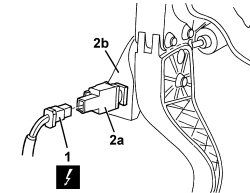

1056F78 SWITCH ON CLUTCH PEDAL R R (PETROL ENGINES)
- Path
- Procedures > 10 ENGINE > 1056 PETROL INJECTION SYSTEM > 1056F PETROL DIRECT INJECTION SYSTEM > 1056F78 SWITCH ON CLUTCH PEDAL R R (PETROL ENGINES)
- Kind
- repair procedure (removal / refitting; the operation number is the code)
- Applies to
- engines: 1.9 JTS, 2.2 JTS, 3.2 JTS; all production periods
- Interactive page
- https://sloeber94.github.io/elrnDB/alfa/159/en/#/939010543
Applies to: engines: 1.9 JTS, 2.2 JTS, 3.2 JTS; all production periods
 Removing
Removing
 Refitting
Refitting
Applies to: engines: 1.9 JTS, 2.2 JTS, 3.2 JTS; all production periods
Refitting
RemovingTopics linked from this page (1)
Topics that link to this page (8)
- E5010 STARTING AND RECHARGING - WIRING DIAGRAM
- E5010 STARTING AND RECHARGING - COMPONENT LOCATION
- E5030 PETROL ENGINE ELECTRONIC MANAGEMENT - WIRING DIAGRAM
- E5030 PETROL ENGINE ELECTRONIC MANAGEMENT - COMPONENT LOCATION
- E5030 PETROL ENGINE ELECTRONIC MANAGEMENT - WIRING DIAGRAM
- E5030 PETROL ENGINE ELECTRONIC MANAGEMENT - COMPONENT LOCATION
- E5030 PETROL ENGINE ELECTRONIC MANAGEMENT - WIRING DIAGRAM
- E5030 PETROL ENGINE ELECTRONIC MANAGEMENT - COMPONENT LOCATION